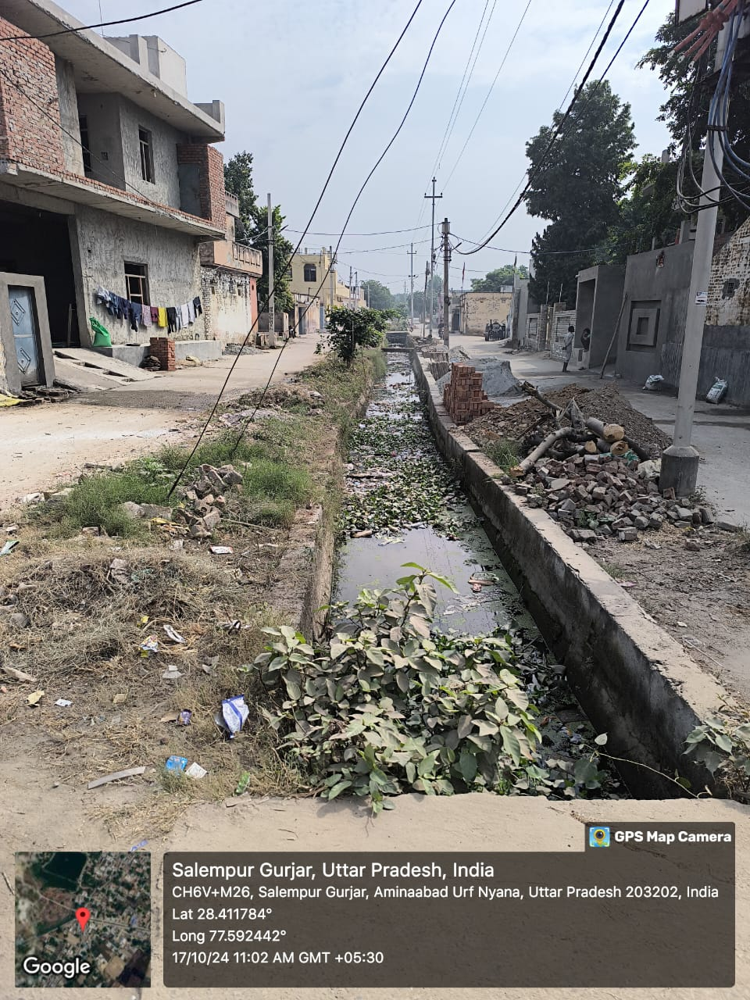
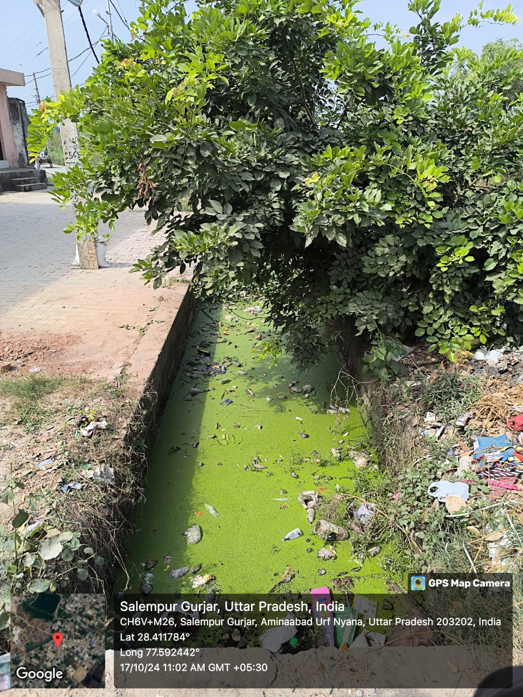
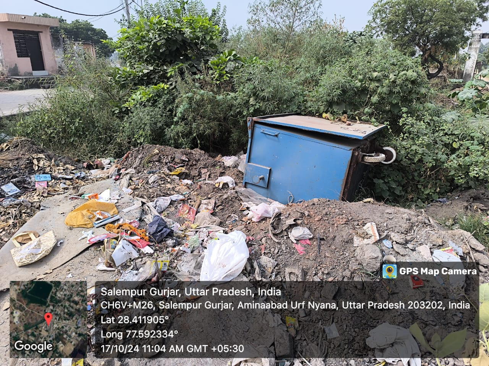
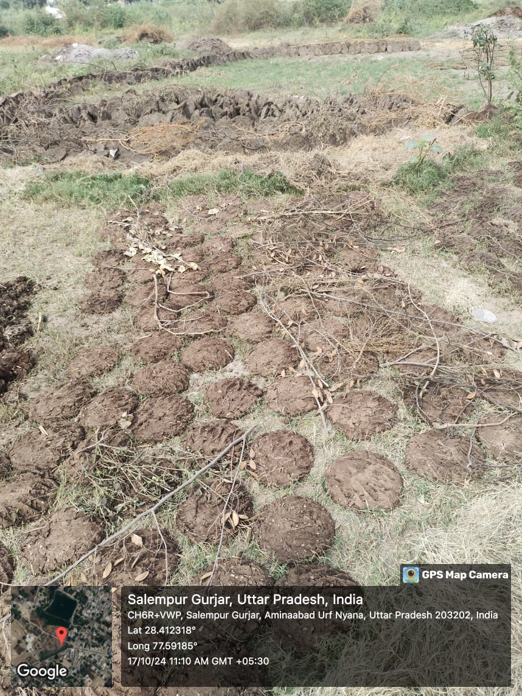

Hygiene & Sanitation in Salampur Gujjar
Proper hygiene and sanitation are fundamental to maintaining public health. Unfortunately, Salampur Gujjar faces challenges like open defecation, lack of clean water, and improper waste disposal. These issues contribute to the spread of diseases.
Current Challenges
Some of the key hygiene and sanitation issues faced by the village include:
- Lack of proper toilet facilities
- Contaminated drinking water
- Poor waste management practices
Visuals From Salampur

Dirty Road

Dirty Drains

Dumping Area

Pilaf
Steps for Improvement
We can address these issues by building more toilets, improving water filtration systems, and educating the community on proper waste disposal and hygiene practices. Local government initiatives and community-driven projects can play a big role in improving sanitation.